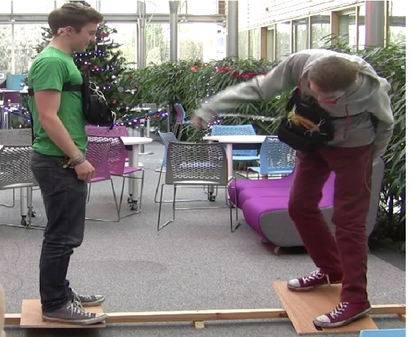
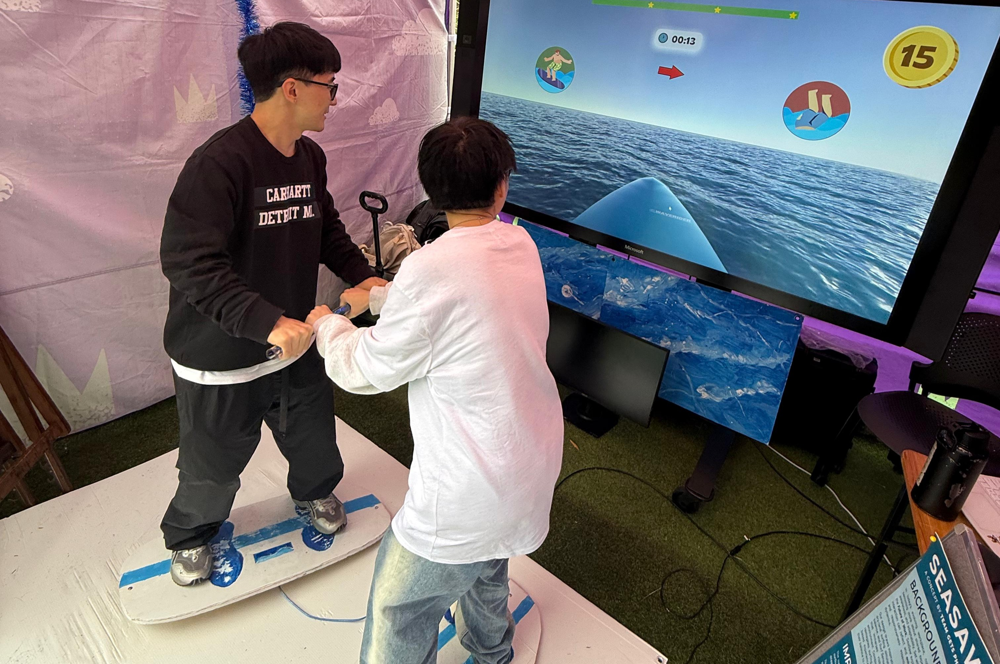

SeaSaw - Exploring Collaboration and Non-Verbal Communication Through Physical Balance
University of Queensland | Interaction Designer
Sea Saw was developed as part of the course DECO7385: Physical Computing Studio at the University of Queensland. The project set out to explore how balance can be leveraged as a medium for non-verbal communication and collaboration.
What did I do for the project?
My role in the project involved researching precedents, designing the interaction flow, building the balance board prototype. I designed the UI for the game and took part in Usability testing and refinement.
View this case study in a video format.
What were we looking to solve?
Collaboration is not always verbal. Subtle forms of communication like posture, gestures, and body movement, often play an equally important role in coordinating with others. Our challenge was to design a system that fosters teamwork through embodied interaction rather than speech.
"Sea Saw reimagines balance as a collaborative input, encouraging participants to rely on timing, rhythm, and physical awareness to achieve a shared goal: collecting coins together."
What inspired the design of Sea Saw?
The research for Sea Saw focused on how balance can act as a medium for non-verbal communication and collaborative interaction, informed by work on somaesthetic interaction design and tangible user interfaces. Key sources included:
- Eunson's writing on non-verbal communicationEunson, B. (2020). Nonverbal Communication.
- Höök's soma design frameworkHöök, K. (2018). Designing with the body: Somaesthetic interaction design. MIT Press.
- Ishii and Ullmer's Tangible BitsIshii, H., & Ullmer, B. (1997). Tangible bits: Towards seamless interfaces between people, bits and atoms. Proceedings of the ACM SIGCHI Conference on Human Factors in Computing Systems (CHI '97), 234-241. https://doi.org/10.1145/258549.258715
- Pasinetti et al.'s non-verbal VR interfacePasinetti, N. J., Rodríguez, G., Alvarado, Y., Fernández, J., & Guerrero, R. A. (2016). Non-verbal communication for a virtual reality interface. XXII Congreso Argentino de Ciencias de la Computación (CACIC 2016).
- Hess's work on nonverbal communicationHess, U. (2016). Nonverbal Communication. In Encyclopedia of Mental Health. https://doi.org/10.1016/B978-0-12-397045-9.00218-4
- Byrne et al.'s Balance NinjaByrne, R., Marshall, J., & Mueller, F. F. (2016). Balance Ninja: Towards the design of digital vertigo games via galvanic vestibular stimulation. Proceedings of the 2016 Annual Symposium on Computer-Human Interaction in Play, 159-170.
These sources together shaped how balance, bodily awareness, and shared control were framed in the project. Influenced by VR systems using natural user interfaces to simulate gestures, the design incorporated inertial measurement units (MPU6050 sensors) embedded in custom-built balance boards, capturing real-time body movements for interaction.

Balance Ninja: Towards the design of digital vertigo games via galvanic vestibular stimulation.
How did we approach the solution?
We started by throwing around lots of different ideas, focusing on making the experience interactive, fun, and then eventually, something people could do together. We played with physical controls and different ways to encourage teamwork through movement. As we built quick prototypes and got feedback from users, things started to get clearer. We realized the importance of simple balance sensing, clear visual cues, and game mechanics that really pushed people to work in sync. Bit by bit, we shaped the concept into something that felt natural and genuinely fun to play together.

Sea Saw
Sea Saw is a collaborative balance game where two players stand on custom sensor-equipped boards that detect their movements in real time. These movements control a shared virtual surfer, with simple visual cues helping players stay in sync. The design focuses on intuitive physical interaction and teamwork, creating an engaging and accessible experience that promotes non-verbal communication.

How was Sea Saw built?
The system uses custom-built balance boards equipped with MPU6050 inertial measurement units (IMUs) connected to Arduino Uno microcontrollers which were hosted in a 3d printed hemi sperical base under the boards. These sensors capture motion data such as tilt and orientation, which is streamed in real time to a central computer.
Video: MPU6050 sensors embedded in 3D printed hemispherical base under balance boards
The data is processed in Unity to control a virtual surfer avatar, translating players' physical balance into game actions. Both boards were programmed to send their data to the central computer, and the computer would then process the average direction of the two boards and control the virtual surfer avatar.
Video: Balance board movements controlling virtual surfer avatar in Unity


.png)